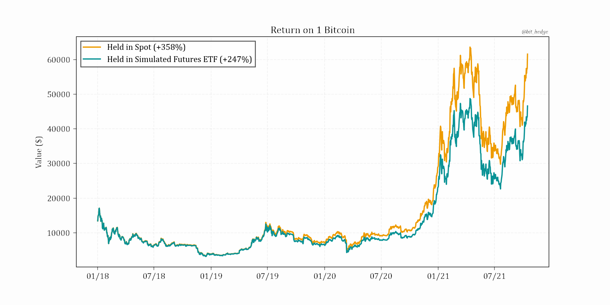

October 17th, 6:43pm nyc time, 2021.
While nobody has missed the discussion surrounding a possible Bitcoin ETF this year and the subsequent 40% rally this month as prospects materialized, discussion in some circles has already turned to doubt in the success of what has now become the first approved crypto ETF by the SEC - one investing in Bitcoin futures.

Following SEC Chair Gensler’s apparent nod towards a Bitcoin ETF operating within the bounds of CME traded futures, giants such as ProShares, VanEck, and now Cathie Wood quickly threw their hats into the ring for a chance at getting approval for such a product. This week, speculation hit a fever pitch as CME Bitcoin futures saw their largest jump in open interest since last year and Bitcoin options stretched to all time high volumes, culminating finally in the confirmation of approval for ProShares’ filing as the following Bloomberg headlines hit on Friday afternoon:
- *PROSHARES BITCOIN FUTURES ETF LAUNCH REVEALED IN SEC FILING
- *PROSHARES SIGNALS BITCOIN FUTURES ETF LAUNCH AS SOON AS MONDAY
So with with the ETF going live right now, questions are flying as to whether it will measure up to current vehicles such as the Grayscale Bitcoin Fund which is pushing $40B in assets under management, and if inflows into futures contracts will have as much of an impact as they’d have going into spot.
The good news is that there certainly is a mechanism for futures inflows to lift the price of Bitcoin. Via the popular ‘basis trade’ allowing directionally neutral firms to net double digit APY in a yield starved world by buying spot Bitcoin and selling CME futures against it, a renewed premium on Bitcoin CME futures would serve to attract more traders towards this strategy and hence more spot Bitcoin would be bought. There is no doubt that such a relationship between futures buys and spot buys would be less than 1:1, but nonetheless the effect does exist.
The bad news is that the efficiency of a futures-based ETF in an asset which typically trades in brutal contango (forward prices higher than spot) needs to be questioned. Per ProShares’ prospectus,
‘The Fund generally seeks to invest in “front month” CME Bitcoin futures contracts. “Front month” contracts are the monthly contracts with the nearest expiration date. CME Bitcoin Futures are cash settled on their expiration date unless they are “rolled” prior to expiration. The Fund intends to “roll” its CME Bitcoin Futures prior to expiration. Typically, the Fund will roll to the next “nearby” CME Bitcoin Futures. The “nearby” contracts are those contracts with the next closest expiration date.’
And while many have expressed concerns, no one has offered a quantification of the problem until now. Simulated by mirroring the fund’s 0.95% management fee, and by holding the front month CME Bitcoin futures contract until rolling to the next on the Monday prior to expiration, the hypothetical performance of such a product (shown since roughly the launch of CME Bitcoin futures, which coincidentally? debuted at the top of the 2017/18 mania) would look like this:
An investment in such a product at the start of 2018 would have lost almost a quarter of its value against Bitcoin since.
Looking at this underperformance, it becomes apparent that in the long run a futures based ETF in a contango-heavy product has an expected value of zero. So if Bitcoin fails to continue posting staggering returns, the chart of this ETF will eventually look like that of many other futures-based ETFS: down and to the right.
United States Oil Fund vs. front month crude oil contract
Which makes it painstakingly obvious that the approved ETF is not suitable for long term investment, and serves only as yet another way for day traders to partake in the exact ‘highly speculative’ activity that Gary Gensler regularly criticizes. And since ‘uber-wealthy’ Gensler, ex-Goldman Sachs, (how else would he have gotten his current position) knows all too well how this contango effect plays out, one has to wonder what exactly his angle is in approving such a product.